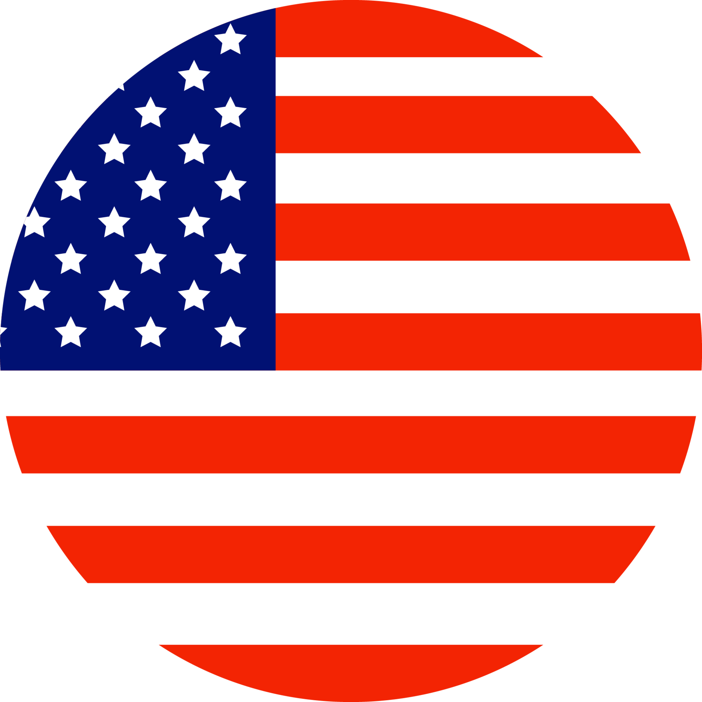

Introducción
Estados Unidos es un país de América del Norte con Washington, D.C. como capital. Su idioma oficial es el inglés, su moneda es el dólar y tiene una población de aproximadamente 331 millones de habitantes en una superficie de 9.8 millones de km².
